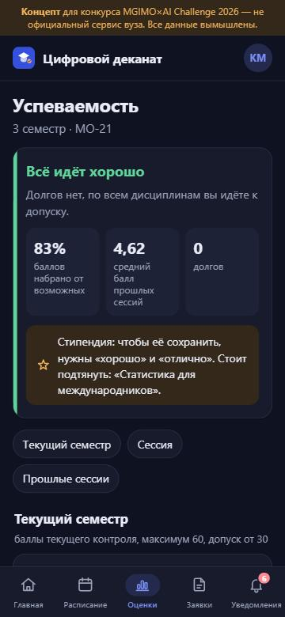
Концепт для конкурса, не официальный сервис вуза. Все люди, оценки и заявки вымышлены.
student1, student2, сотрудник деканата dekanat. Пароли — в комментарии к заявке.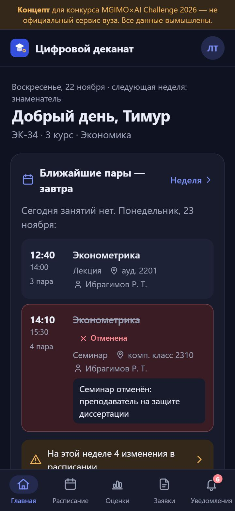
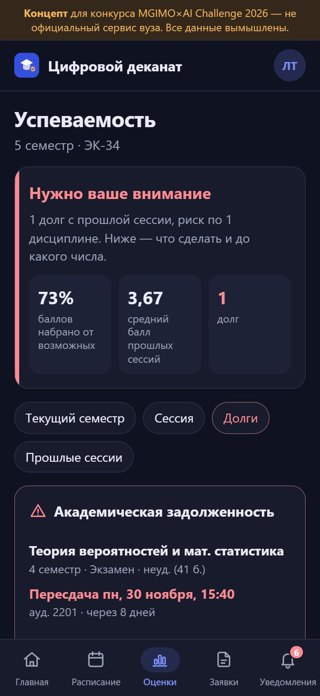
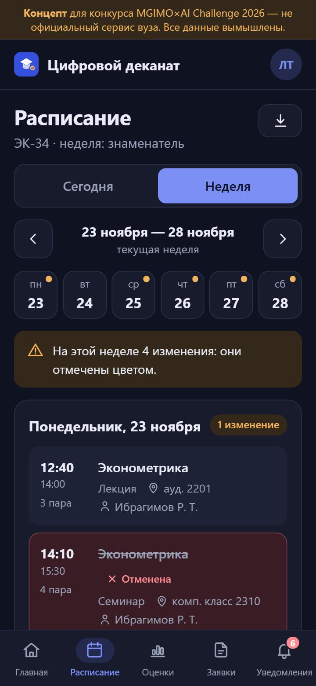
Сейчас студенту для обычных дел нужно несколько мест сразу: расписание в одной таблице, о переносах пишут в чатах групп, баллы у каждого преподавателя свои, а за справкой нужно идти в деканат в часы приёма и потом ещё раз — забирать. Главный вопрос студента «как у меня дела и что мне сделать на этой неделе» быстрого ответа не имеет.
Кабинет собирает это в одном месте и отвечает на четыре вопроса:
| Вопрос студента | Раздел |
|---|---|
| Куда идти сегодня и что поменялось? | Расписание: сегодня и неделя, числитель/знаменатель. Изменения выделены цветом, старая аудитория зачёркнута, рядом причина. Экспорт в календарь телефона. |
| Меня допустят к сессии? Хватает ли на стипендию? | Успеваемость: одна фраза-вывод, баллы против порога допуска, совет по каждой дисциплине, долги с датой пересдачи, расписание сессии, прошлые сессии. |
| Как получить справку, не стоя в очереди? | Заявки и справки: заказ за минуту, статусы «Подана → В работе → Готово → Завершена», история, электронная справка-образец. |
| Что я пропустил? | Уведомления: новости деканата, изменения в расписании, статусы заявок и дедлайны на 3 недели в одной ленте. |
Профиль (ФИО, факультет, направление и профиль, курс, группа, форма и основа обучения) — точка опоры: все разделы показывают данные именно этого студента и его группы. На главной собрано главное из каждого раздела, так что почти на любой вопрос студент отвечает с первого экрана.
Для деканата сделан второй кабинет: очередь заявок с поиском, смена статуса (студенту сразу приходит уведомление; отказать без причины нельзя) и рассылка новостей группе или всем. Без него статусы заявок были бы декорацией.
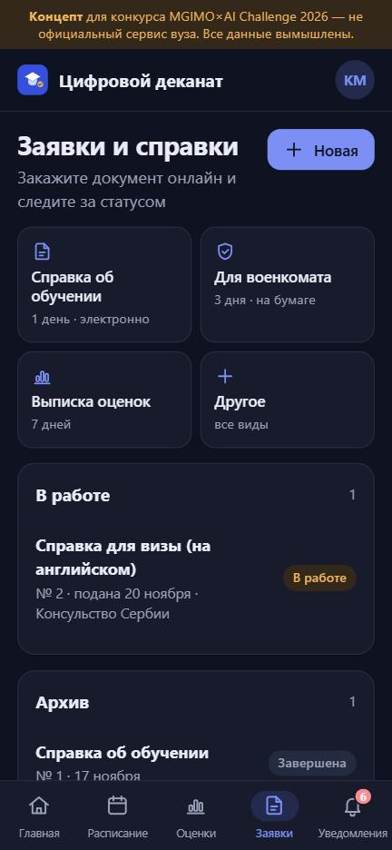
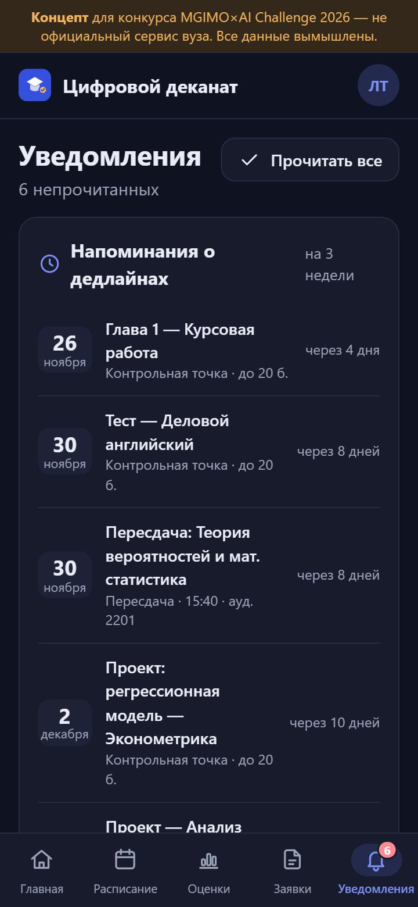
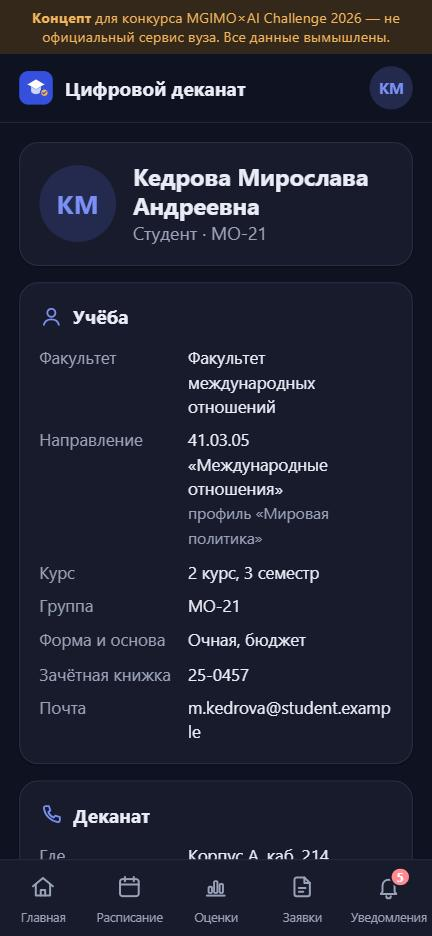
| Инструмент | Зачем |
|---|---|
| Claude Code — агент в десктоп-приложении Claude, модель Claude Opus 5.5 | Основной разработчик: план, модель данных, сервер, шаблоны, стили, демо-данные, автотесты, README, AGENTS.md, черновик этого описания. Работал в отдельной папке и коммитил по шагам. Пароли, регистрацию и отправку кода на хостинг оставлял человеку. |
| Встроенный браузер Claude | Агент сам открывал прототип на ширине 360 px и 1280 px, в светлой и тёмной теме. Проходил сценарии (вход, заявка, выход, вход сотрудником), скриптом искал элементы шире экрана, проверял ответы 404 и 403 на чужие адреса. Отсюда же скриншоты. |
| pytest | 28 сквозных автотестов: каждое изменение ИИ проверяется сразу. |
| Python 3.11, FastAPI, Jinja2, SQLAlchemy, bcrypt | Стек прототипа, все библиотеки под лицензиями MIT, BSD или Apache. Страницы рендерятся на сервере: права проверяются в одном месте, секретов в браузере нет. |
| Git | История версий и деплой (git push на хостинг). |
| Amvera (amvera.ru) | Российский хостинг: открывается без VPN, деплой через git, бесплатный HTTPS-домен, постоянный диск для базы. |
| Microsoft Edge | Печать этого описания из HTML в PDF. |
Сделай за сегодня рабочий прототип… Обязательное ядро: 1) вход по логину и паролю, профиль: ФИО, факультет, направление, курс, группа; 2) расписание на сегодня и на неделю: аудитория, преподаватель, заметные переносы и изменения; 3) успеваемость… понятная картина «как у меня дела»; 4) заявки и справки… видеть статус; 5) уведомления…
Требования: настоящий работающий прототип по ссылке… работает на телефоне от 360 px; данные только вымышленные… Безопасность проверяется: чужой профиль или заявку не открыть даже подменой адреса (проверка прав на сервере); пароли хранятся хешем…
Порядок: 1) сначала хостинг — главный риск… 2) узкий объём: ровно пять разделов… 3) проверь безопасность руками… 4) по ходу собирай материалы…
Сработало то, что критерии сформулированы проверяемо («подмена id → 404», «360 px», «пароли хешем»). Агент превратил их в автотесты до того, как показывать результат. Отдельно в промпте заданы рамки: не трогать чужие папки, писать код с нуля, не вводить пароли и не создавать аккаунты.
Сравни 2–3 варианта (российские PaaS вроде Amvera или Timeweb Cloud, либо VPS) по доступности из РФ, бесплатности и скорости деплоя и предложи один. Аккаунты регистрирует сам пользователь: ты не вводишь пароли и не создаёшь аккаунты, только говоришь, что сделать.
Выбрали Amvera: деплой одной командой git push, HTTPS-домен из коробки, постоянный том для базы. Агент выдал пошаговую инструкцию, регистрацию и оплату человек сделал сам.
Агент предложил сервер с рендерингом страниц вместо SPA и обосновал выбор:
Модель данных разделена на справочники (факультет → направление → группа) и личные данные студента. Каждый запрос к личным данным фильтруется по вошедшему пользователю.
Демо-данные считаются от дня первого запуска, поэтому «сегодня» в расписании всегда актуально. Два студента нарочно разные: у одной всё хорошо и бюджет, у другого контракт, долг с пересдачей и риск по дисциплине. Так видно, как кабинет говорит «как у меня дела» в обоих случаях.
Продолжай. Порядок: 1) requirements.txt, запуск локально, проверка всех пяти разделов, входа, разделения данных двух студентов (подмена id → 404) и ширины 360 px; 2) первый коммит; 3) деплой, как только будут данные Amvera; 4) по ходу — скриншоты и промпты для PDF-описания.
Агент прогнал тесты, открыл прототип во встроенном браузере на 360 px и прошёл каждый раздел. Отправил заявку, руками перебрал адреса чужих заявок, справок, уведомлений и страниц сотрудника. Нашёл и исправил ошибки из раздела 4. Правила, на которых ИИ уже ошибался, записаны в AGENTS.md — документ для следующих агентов.
| # | Что сделал ИИ | Как нашли | Как исправили |
|---|---|---|---|
| 1 | Назвал список контрольных точек items. В Jinja r.items — встроенный метод словаря, страница успеваемости падала с TypeError. | Автотест «все страницы отдают 200» | Ключ переименован в kts, правило записано в AGENTS.md. |
| 2 | Страница 404 обращалась к группе студента после закрытия соединения с базой (DetachedInstanceError). На чужую заявку вместо «Не найдено» получалась ошибка 500. | Автотест «чужая заявка → 404» | Группа, направление и факультет загружаются вместе с пользователем. |
| 3 | CSS text-transform: capitalize в строке даты: «Воскресенье, 22 Ноября». | Просмотр на 360 px | Заглавной делается только первая буква. |
| 4 | В воскресенье главная писала «неделя: числитель» (уже закончилась), а расписание показывало следующую неделю — знаменатель. | Сверка экранов | Главная в воскресенье пишет «следующая неделя: знаменатель». |
| 5 | Подставил название дисциплины в неверном падеже: «подтяните Статистика для международников». | Чтение текстов | «Стоит подтянуть: «Статистика для международников»». |
| 6 | Средний балл с точкой: «4.62». | Просмотр | Фильтр decimal → «4,62». |
| 7 | Главная: «на этой неделе 4 изменения», расписание за ту же неделю: «5 изменений». Перенос пары считался дважды. | Сравнение скриншотов | Оба экрана считают одной функцией changes_between. |
| 8 | Ряд кнопок-якорей на 360 px уезжал за край экрана. | Скрипт: элементы шире экрана | Кнопки переносятся на вторую строку. |
Логические ошибки (1–2) поймали автотесты, которые агент написал сам по критериям из промпта. Ошибки «человеческого» качества (3–8: падежи, типографика, противоречия между экранами) нашлись только при просмотре на реальной ширине. Отсюда правило работы: каждый шаг — тест плюс просмотр.

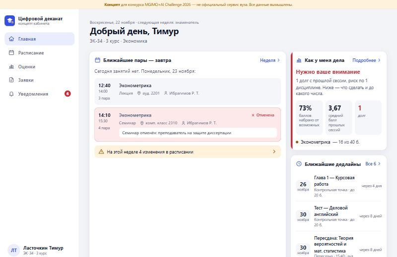
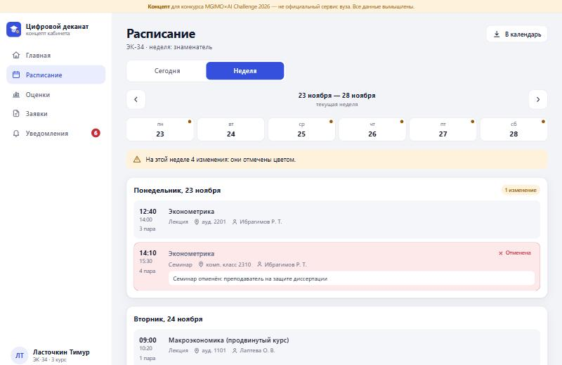
HttpOnly, SameSite=Lax, по HTTPS ещё и Secure), недоступный скриптам. На сервере хранится только отпечаток пропуска, срок 7 дней. «Выйти на всех устройствах» гасит все пропуска.DATABASE_URL, код не меняется.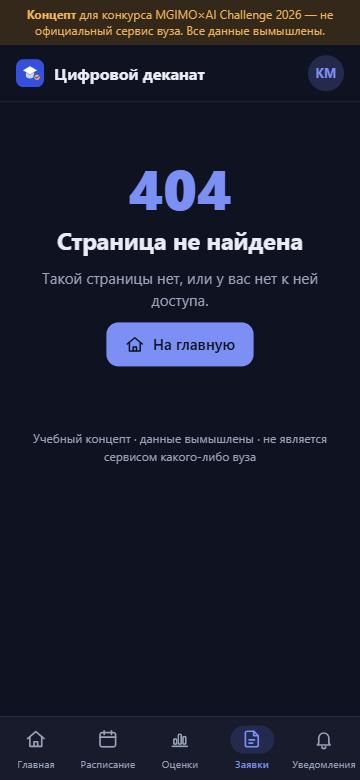

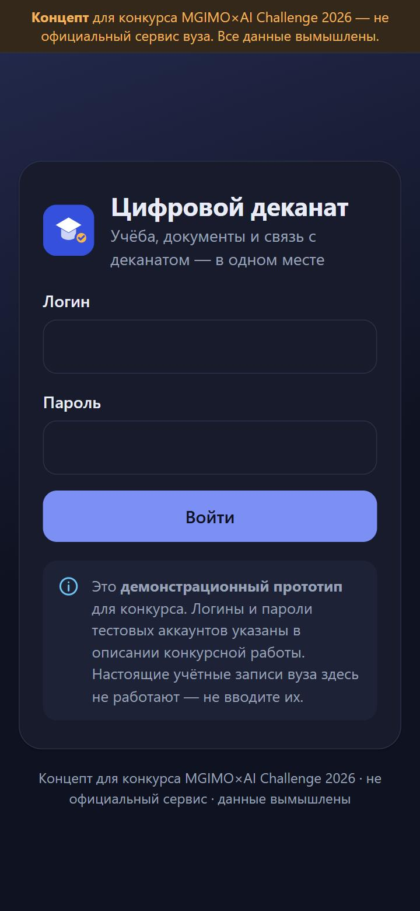
Компьютер (светлая тема, боковое меню) и кабинет сотрудника деканата на телефоне (тёмная тема).
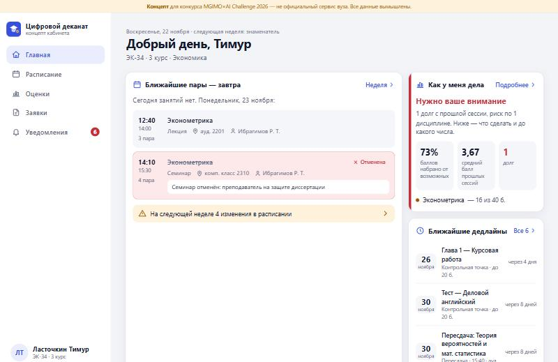
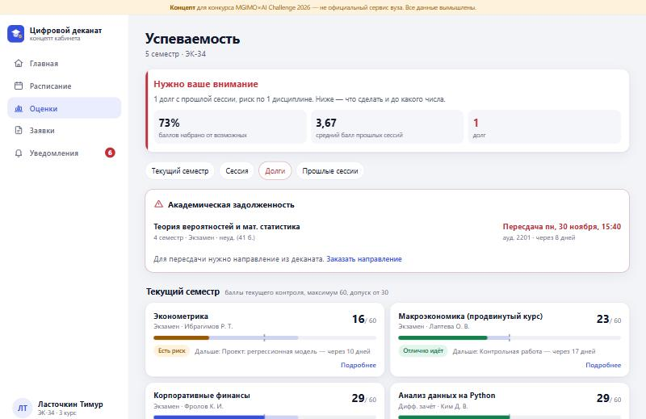
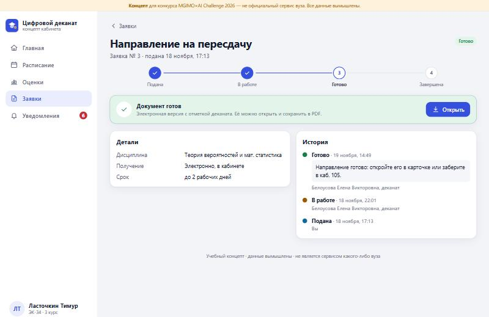
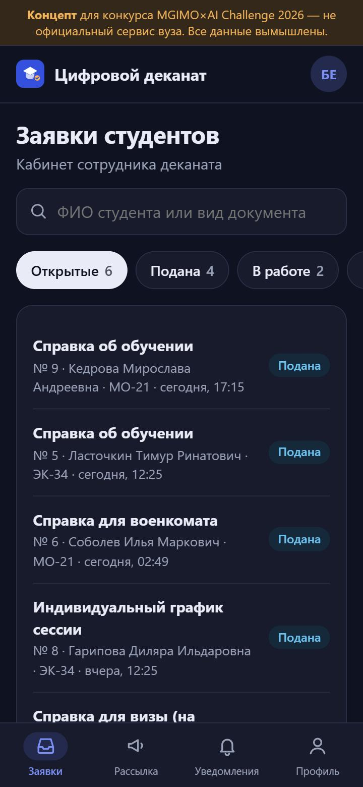
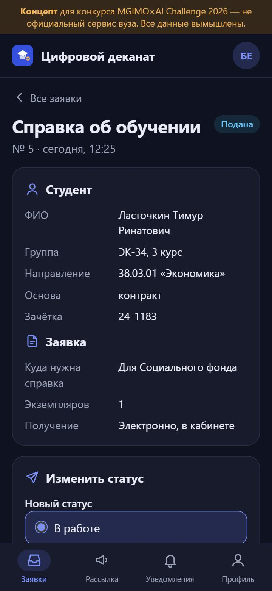

Код, тексты, иконки и логотип созданы с нуля для конкурса. Подробности для разработчиков — в README.md и AGENTS.md репозитория.